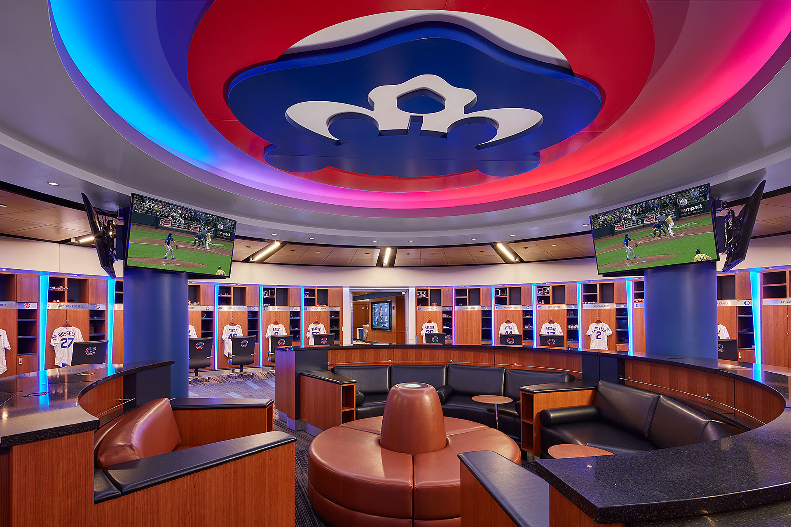
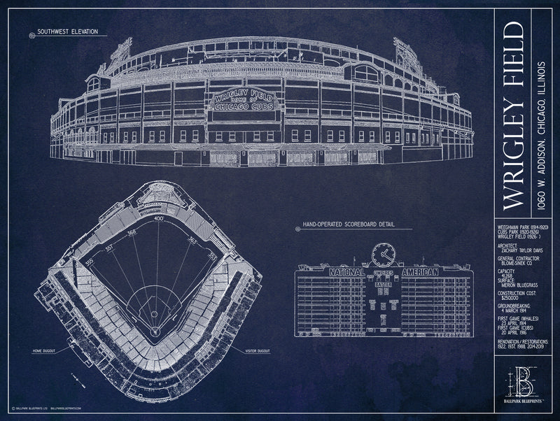
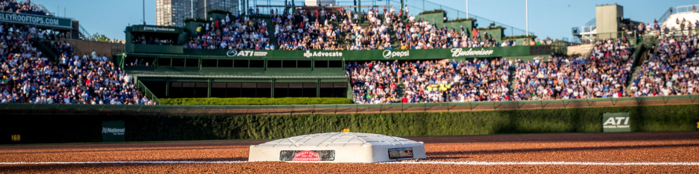
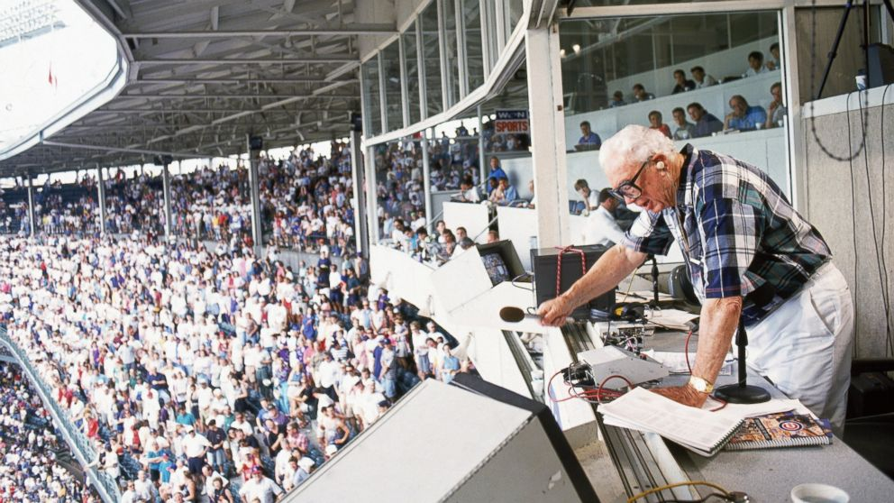
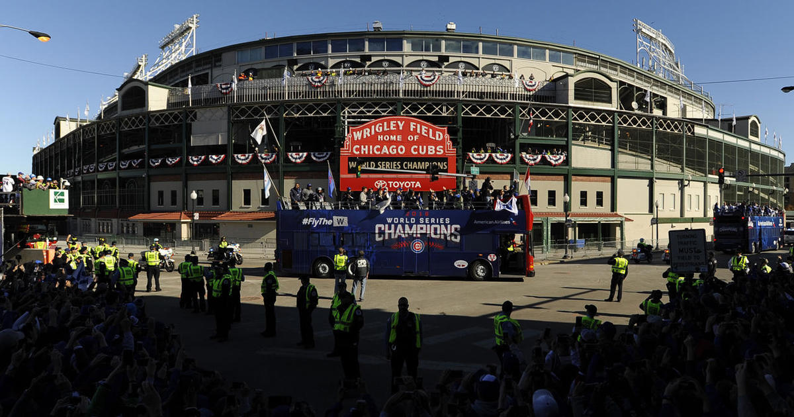
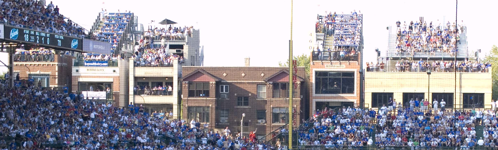
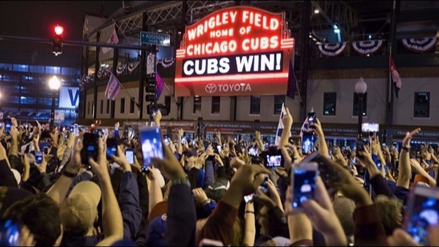
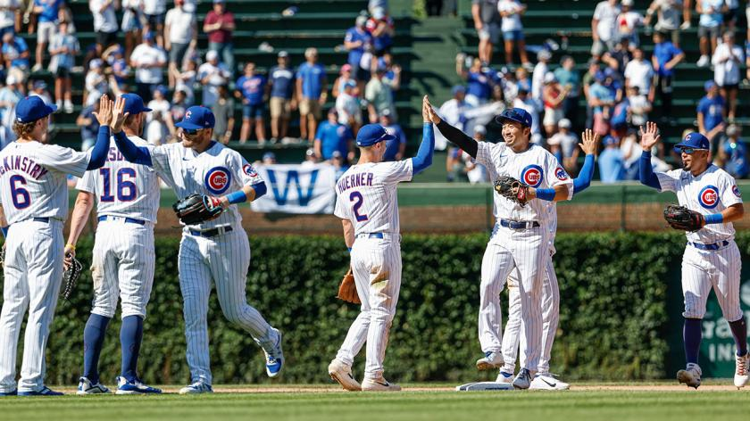

The Cubs new state of the art clubhouse inside Wrigley

The dimensions of Wrigley Field

Part of the new renovations included a park outside of Wrigley called Gallagher Way, where fans can watch Cubs games, movies, and concerts

One of the most popular places to sit inside Wrigley is the bleachers. It is all general admission seating, and fans love to drink and have a good time

Former Cubs announcer Haray Caray, beloved by Cubs fans and famous for singing 'Take me Out to the Ballgame' during the 7th Inning Stretch

After not winning a World Series in 108 years, Cubs fans came from all over the world to celebrate in 2016. The parade was one of the largest gatherings in human history with over 5 million Cubs fans in attendance

One of the most unique parts of Wrigley Field are the rooftops across the street, where fans can sit and enjoy the game from a distance

The Cubs won their first World Series since 1908 in 2016

After each win, Cubs players line up and high-five while the fans sing "Go Cubs Go" behind them

View from behind of Wrigley - taken near the Red Line train which fans can take to easily access the stadium